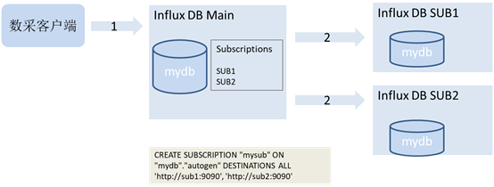
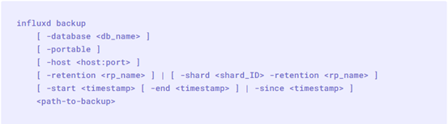
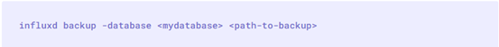

InfluxDB备份策略
设备数据采集的时序数据使用InfluxDB进行存储，InfluxDB提供了两大类备份策略来保障数据安全：
数据库实时主备
实时主备是指通过内置的subscription机制，将主库收到的请求通过go-routine的方式到从库进行重放来实现数据的主备存储。这种方式可以认为是热备。
数据定期备份
定期备份是指通过客户端工具提供的backup命令将数据备份到其他地方进行保存，需要恢复的时候通过restore命令加载数据备份。这种方式根据数据备份的频率存在丢失数据的风险。
备份策略
实时备份
通过subscription的方式实现主备的架构如下图：

首先在InfluxDB的主服务器上通过命令建立订阅，包含如下信息：
- 订阅名称 mysub
- 订阅的数据库和保留策略 mydb.autogen
- 数据目的策略，可选ALL（全部发送）和ANY（Round Robin发送任一）
- 数据目的地，以逗号分隔的目标主机信息
创建完成后在主服务器上会生成一个类似路由表的数据结构，数采客户端发送数据（1）到主服务器后，主服务器根据路由策略生成一个或者多个writer（2）将数据同步发送到备库。
全量备份
全量备份通过influxd命令行工具，主要语法如下：

基于全量备份的备份恢复策略可以用如下的流程图来表示：
每天通过系统定时任务的方式触发 bk_influx.sh 的shell脚本进行数据备份，备份完成后传输到归档位置，可以是挂载的usb设备也可以是用户定义的网络位置。最后备份进行滚动替换，删除过期的备份数据。当数据库损坏或者需要搭建影子环境的时候只需要直接使用restore命令进行恢复即可。
增量备份
增量备份的是在上述全量备份的时候通过指定start和end进行区间过滤，但是start和end的实现上存在缺陷使得我们即使进行了过滤，一样会占用很多的系统资源进行大量的无用数据文件读操作。恢复的时候需要额外写工具进行数据导入。备份恢复的流程如下：
从流程图上看增量备份的备份过程和全量备份基本一致，主要差异有：
- bk_influx.sh的逻辑差异，备份时需要指定开始结束时间
- 由于是增量备份，每一个备份都是相对独立的不需要备份替换过程
- 数据恢复过程需要一个临时库存储增量数据，然后使用工具通过java 客户端从临时库读取数据并写入到主库
离线备份
离线备份是InfluxDB早期版本提供的功能，准确的说应该是在线备份离线恢复，对应于MySQL的物理备份。
在InfluxDB的数据目录结构可以看出数据是分成meta、data和wal三个维度存储的。Meta存储的是元数据例如数据库结构，用户信息等；data目录中以tsm的文件格式存储时序数据；wal目录存储的是预写入日志。离线备份模式下会获取meta和data目录下对应的文件，wal目录下的文件因为没有同步到数据文件不做处理。
离线备份的语法如下，

离线备份恢复流程如下：
- 定时任务运行增量备份，备份当前时间对应的shard ID
- 传输备份数据到指定位置，usb或者网络位置
- 进行备份恢复之前需要关闭目标服务
- 运行客户端命令进行离线恢复
- 启动目标服务检查数据正确性
从以上流程可以看出主要的难点有两点:
如何确定备份的频率
我们通过show retention policies可以确定shard定义的范围。如果一个shard范围是一周，我们可以定义备份的频率为一周，当然小于一周也是可以的，只不过操作的是同一个数据文件在备份的时候进行滚动替换。
如何确定最新的shard ID
通过show shards命令可以确定shard的分布。然后进入到data 目录下找到当前retention policy目录下最大的shard目录即为最新的shard ID。出于完备性考虑，如果某一次备份没有进行则需要从最近一次备份的shard Id进行，所以可以新建文件来保存最近备份的shard ID，这样下次备份只需要找到大于最近备份的shard的所有shard进行备份即可。
获取shard id的逻辑如下：
1
2
3
41， 获取最近一次备份的shard ID，如无则返回0
2， 遍历data目录，获取大于shard ID的所有文件夹名称
3， 循环进行增量备份
4， 备份完成后更新最近的shard ID
总结
InfluxDB 提供了四种备份策略，可以通过下表进行一个简单比较。
| 备份策略 | 优点 | 缺点 | 适用场景 |
|---|---|---|---|
| 数据库主备 | 实时备份 数据安全性较高 |
架构复杂，系统资源消耗大 | 需要实现时序数据库高可用的情况 |
| 全量备份 | 兼容性好 恢复操作简单 |
海量数据的场景备份恢复占 用大量的系统资源， 影响实时业务 |
数据量不多（<10G）或者硬件性能 较好的情况 |
| 增量备份 | 备份窗口 时间缩短 |
恢复过程需要引入其他客户端工具， 提供的start和end参数存在bug |
已有InfluxDB迁移工具的情况 |
| 离线备份 | 物理备份速度快 资源占用少 |
备份的时候需要管理Shard ID， 只能离线恢复并重启服务 |
数据恢复主要应用于离线分析和影子 环境的场景 |
从上表可以看出数据库主备的方式架构复杂而且系统资源消耗极大，一般情况下直接忽略。
在项目初期数据量较小的时候可以选择全量备份，减少操作的复杂度。随着数据量的逐渐增加，可以选择增量备份或者离线备份。如果选择增量备份需要自己准备InfluxDB迁移工具用于从临时库到主库的数据迁移，而选择离线备份则需要在备份脚本中增加shard ID的管理，当然因此换来的备份资源大幅缩减还是能值回票价的。